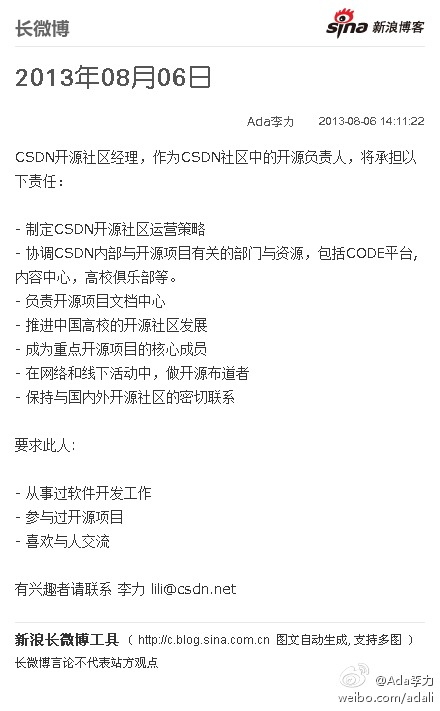

两步走，一，沟通让别人知道你牛，二，扎实地做好事情证明你牛。//@老软件工程师:易沟通。计算机科学和工程技术基础扎实。对具体工具和平台开发有系统认知和丰富实践。 //@谊昌:转，且有个长久以来的疑问，各位大佬心目中关于大牛的量化标准是啥呀？让俺们眼馋高薪但能力还欠缺的能有个奔头@老软件工程师:创业公司，专注移动互联网，寻找iOS／Android客户端开发大牛，待遇25k－40k。 请大家帮忙转发 @Ada李力 @程序媛 @ztyan @LiuHan @家常咖啡 @杜斌beta @Richard宫文学 @程开源 @三界org @考试中的阿朵 @Placebo_Effect @silkywave3 @手机用户uptown1919 @BonderWu
方国伟-当大数据遇上AWS ;梁斌-大数据下的海量结构性词库的学习构建和应用 ;李松林-大数据分析 ;陈雨强-大规模机器学习在百度搜索广告中的应用 ;杨栋-浅谈线下的实时推荐 @CTO俱乐部 第107期主题活动：畅聊大数据 - CSDN.NET 网页链接
CSDN开源社区经理，作为CSDN社区中的开源负责人，将承担以下责任： - 制定CSDN开源社区运营策略 - 协调CSDN内部与开源项目有关的部门与资源，包括CODE平台, 内容中心，高校俱乐部等。 - 负责开...文字版>> 网页链接 （新浪长微博>> 网页链接） 
目前只要符合这三条都可以来试试啊。1。从事过软件开发工作；2。参与过开源项目；3。喜欢与人交流 ，但貌似要求越少，人越不容易请到呢。@Ada李力:CSDN开源社区经理，作为CSDN社区中的开源负责人，将承担以下责任： - 制定CSDN开源社区运营策略 - 协调CSDN内部与开源项目有关的部门与资源，包括CODE平台, 内容中心，高校俱乐部等。 - 负责开...文字版>> 网页链接 （新浪长微博>> 网页链接）
CSDN诚邀开源社区经理：2013年08月06日-诚邀C D 开源社区经理 //@洪倍-手推车: 所以CSDN做这个思路合适，以工程化的思维从学生开始培育代码管理优化意识//@TECH2IPO: 从某种意义上讲，代码托管是具有一定公益性质的服务。因为在国内 IT 大环境的背景下，想要通过代码托管服务在国内实现高收入几乎不太可能。---:抱歉，此微博已被作者删除。查看帮助： 网页链接
开放平台，MarkDown, 美国年度盛会 - 这是我看到的关键词。[呵呵]//@CSDN李涛: @CSDN，小C和大象一起跟大家起舞！//@印象笔记: 大赛火热进行中，各位象亲，如果你爱用Markdown，快来造福程序猿和攻城狮吧！@印象笔记:【开发者大赛，赢了9月去美国！】印象笔记和CSDN携手，举办开发者大赛，要求开发一款支持印象笔记的markdown工具，让程序猿和攻城狮们更舒服的使用印象笔记！详细规则请点大图，最终的胜者，将于9月末和印象笔记团队一起去美国参加印象笔记第三届年度盛会！快来申请API：网页链接